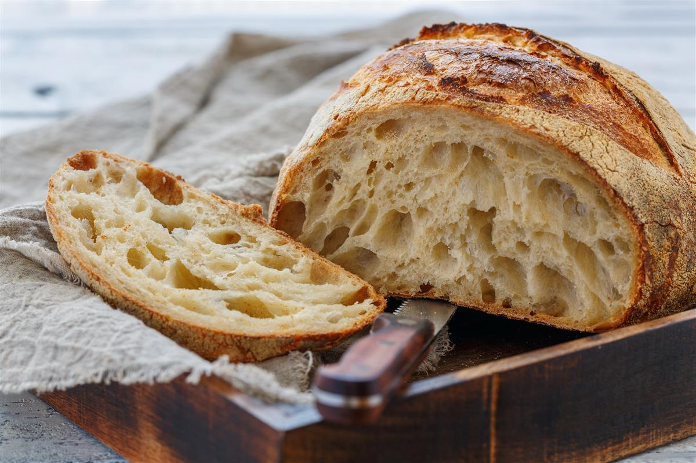

Domaći kruh jedan je od najjednostavnijih recepata koji možemo pripremiti kod kuće. Potrebno je samo nekoliko osnovnih sastojaka, malo vremena i strpljenja.
Količina vode može se malo prilagoditi ovisno o vrsti brašna. Omjer vode i
brašna. može se zapisati kao voda / brašno.
Za ovaj recept koristimo približno 60% vode u odnosu na količinu brašna.

Temperatura pečenja može biti oko 220°C. Vrijeme pečenja ovisi o veličini kruha.
Tijesto treba biti mekano i lagano ljepljivo. Ako je tijesto pretvrdo, potrebno je dodati malo vode. Ako je previše ljepljivo, može se dodati mala količina brašna.
Dobar kruh traži samo nekoliko sastojaka, ali najviše strpljenja.
Stara kuhinjska izreka
Ako želite naučiti više o pečenju kruha, posjetite stranicu o kruhu.
Kemijska formula vode je H2O, a temperatura od 100°C predstavlja približnu temperaturu vrelišta vode pri normalnom atmosferskom tlaku.
Jednostavan postupak za provjeru je:
umijesi-ostavi-oblikuj-ispeci
Dobar tek!